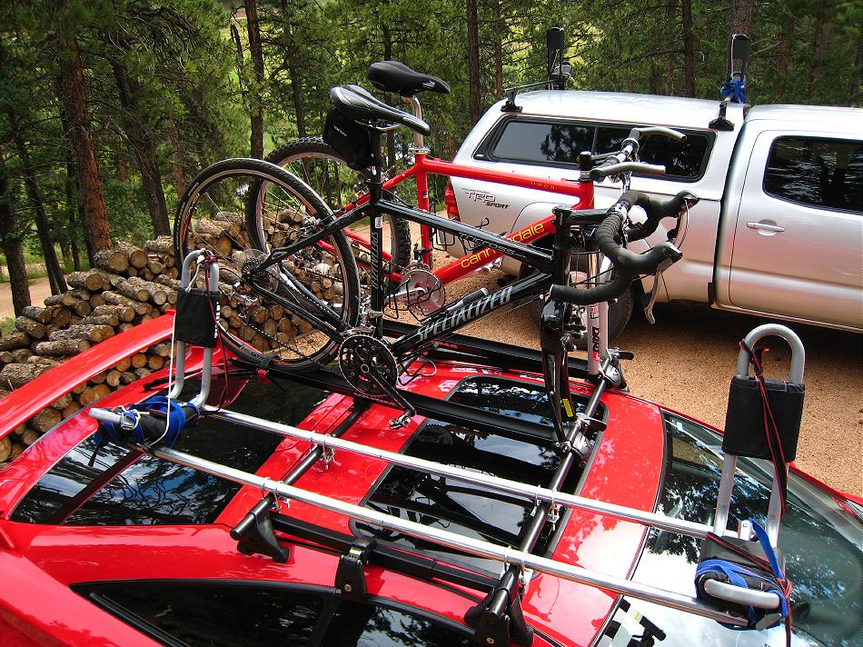

| Transport | Menu Previous Page Next Page |
|

Any kayak carrier system will work with wood frame kayaks. I prefer "on edge" J-Carriers as they are quite stable and secure at highway speeds. A wide span between carriers is preferable as it provides a more stable base for travel and holds the kayak in a more rigid position. On a truck, 5 to 6 feet between bars is normal, but this Celica has only a 26" span between Yakima bars, and I find this to be too narrow for stable transport. To increase the span to 5ft, I have added 62" X 1.25" aluminum tubes and 10" X 1.125" crossbars to increase the distance between carriers ( Thule J-carriers) to 5ft. Steel tubing can easily be used vs aluminum if heavier kayaks are being carried.
|
|